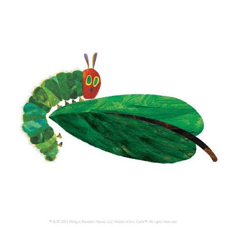

The Very Hungry Caterpillar

In the light of the moon a little egg lay on a leaf. One Sunday morning the warm sun came up… And POP, out of the egg came a tiny, very hungry caterpillar. He started looking for some food..
On Monday he ate through one apple. But he was still hungry. On Tuesday he ate through two pears, but he was still hungry. On Wednesday he ate through three plums, but he was still hungry. On Thursday he ate through four strawberries, but he was still hungry. On Friday he ate through five oranges, but he was still hungry. On Saturday he ate through one piece of chocolate cake, one ice-cream cone, one pickle, one slice of Swiss cheese, one slice of salami, one lollipop, one piece of cherry pie, one sausage, one cupcake, and one slice of watermelon.
That night he had a stomachache! The next day was Sunday again. The caterpillar ate through one nice leaf, and after that he felt better. Now he wasn't hungry anymore --- and he wasn't a little caterpillar anymore. He was a big fat caterpillar. He built a small house, called a cocoon, around himself. He stayed inside for more than two weeks Then he nibbled a hole in the cocoon, pushed his way out and… He became a beautiful butterfly!